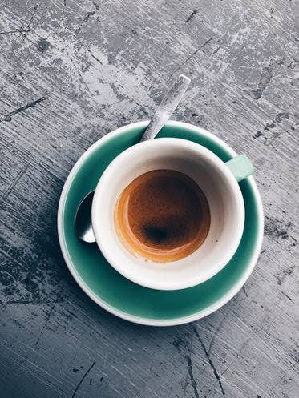
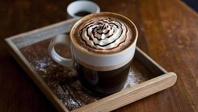
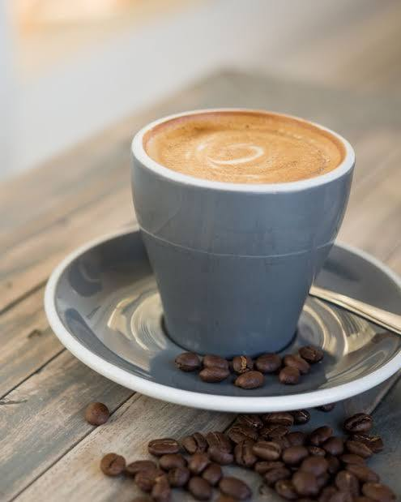
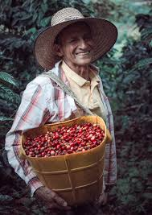

El mejor cafe de Cali
Café de origen, tostado artesanal en el corazón de Cali
Nuestro menu
Espresso
La base de casi todos los cafés, pequeña y concentrada.
Precio: $3.500 COP
Sabor intenso y cuerpo denso obtenido por presión.

Americano
Ideal para quienes prefieren un café más largo y suave.
Precio: $4.500 COP
Espresso diluido con agua caliente para suavizar el sabor.
Capuchino
Un clásico equilibrado conocido por su textura espumosa.
Precio: $7.500 COP
Partes iguales de espresso, leche vaporizada y espuma de leche.
Latte
La opción más cremosa, perfecta para quienes disfrutan de la leche.
Precio: $9.000 COP
Mucha leche vaporizada con un shot de espresso y fina capa de espuma.

Mocha
El favorito de los amantes del dulce.
Precio: $10.500 COP
Espresso, leche vaporizada y jarabe de chocolate.

Flat White
Una bebida sofisticada que resalta el sabor del café.
Precio: $9.000 COP
Doble espresso con una fina capa de microespuma de leche.

Sobre nosotros
En Brew & Co. creemos que el café es más que una bebida — es una experiencia. Desde 2018 llevamos el mejor café de origen colombiano directamente a tu taza, con procesos artesanales y un profundo respeto por cada grano.
- Cafe de origen
- Tostado Artesanal
- Envio a domicilio